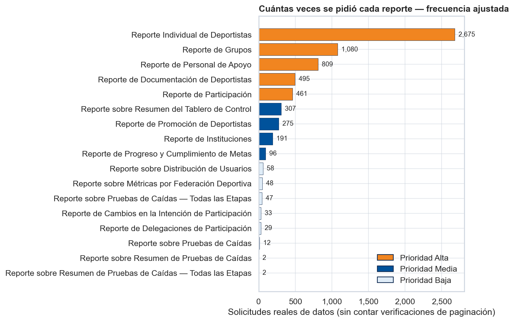
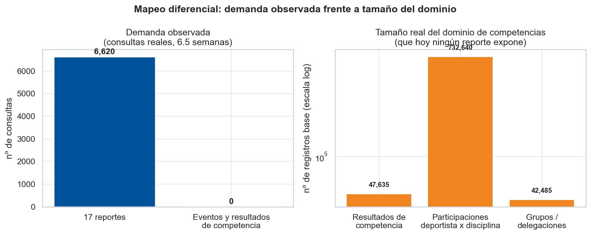
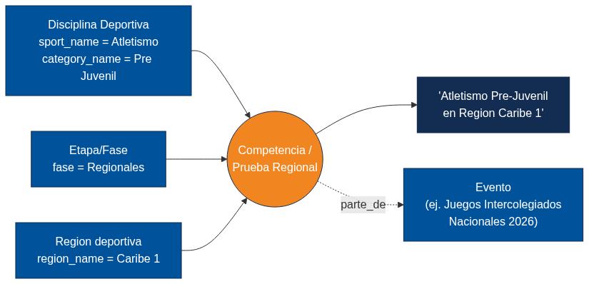
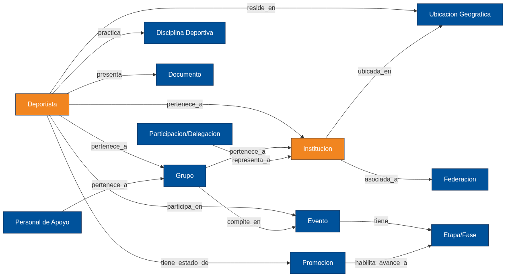

La demanda observada y la ontología#
Antes de construir un buscador hacía falta saber qué buscan las personas que usan la plataforma. Como la plataforma no tiene un buscador sobre sus reportes y sus cajas de texto son filtros de lista que no guardan lo que se escribe, no existe un registro de búsquedas en texto libre. Lo más cercano a una consulta humana es el historial de ejecuciones de reportes: cada vez que alguien abre un reporte y aplica filtros, el sistema ejecuta instrucciones contra el almacén de datos y las registra. De ese historial salieron la unidad de análisis, la medida de la concentración de la demanda, la evidencia de un dominio que no aparece en él y, a partir de todo eso, la ontología del dominio.
Las cifras son las de la monografía después de la auditoría del 30 de septiembre de 2026. El cuaderno EDA del historial del archivo muestra la versión anterior; al final de la página se detalla qué cambió.
Qué se guardó del historial#
La ventana de observación es de seis semanas y media. De cada ejecución se conservó su firma: qué reporte se ejecutó, qué tablas y columnas tocó y qué palabras clave de filtro usó. Los valores buscados no se guardaron. Antes de almacenar nada se eliminaron de cada instrucción los literales de cadena y los números largos, y una auditoría automática buscó correos, teléfonos y secuencias de dígitos en el resultado sin encontrar ninguno. El análisis examina qué se preguntó, nunca qué respondió el sistema, y no toca información de ninguna persona.
Los nombres técnicos internos de los reportes y tablas se mencionan en la monografía una sola vez; aquí se usan los nombres en lenguaje natural.
La unidad de análisis#
Contar ejecuciones brutas sobrestima la demanda. La plataforma ejecuta dos instrucciones por cada página de resultados que ve el usuario: una que trae los datos y otra que solo cuenta cuántos hay, para paginar. Además, muchas ejecuciones solo llenan los desplegables de los filtros de la interfaz. Ninguna de las dos expresa una necesidad de información.
La unidad que usa la tesis es la consulta de datos real, que descarta las verificaciones de conteo y las consultas de filtros.
Tipo de ejecución |
Cantidad o proporción |
Lectura |
|---|---|---|
Ejecuciones registradas |
\(14.718\) |
todo lo que el sistema ejecutó en la ventana |
Solicitudes reales de datos |
\(6.620\) (\(45\%\)) |
unas \(145\) por día |
Conteos de paginación |
\(38{,}5\%\) |
la instrucción gemela que solo cuenta filas |
Consultas de filtros de la interfaz |
\(16{,}5\%\) |
alimentan los desplegables, no responden una pregunta |
Contar las dos instrucciones de cada página por igual inflaría la demanda casi al doble. Las \(145\) solicitudes reales por día son, además, la cifra con la que la tesis dimensiona la carga del buscador: con unos \(0{,}35\) segundos por consulta, esa demanda representa menos de un minuto de cómputo diario (ver el costo computacional en la Versión 1).
Cómo se reparte la demanda#
Sobre las \(6.620\) solicitudes reales, la demanda se reparte de forma muy desigual entre los diecisiete reportes que la plataforma ofrece.
Posición |
Reporte |
Solicitudes reales |
Proporción |
|---|---|---|---|
1 |
Reporte Individual de Deportistas |
\(2.675\) |
\(40{,}4\%\) |
2 |
Grupos |
\(1.080\) |
\(16{,}3\%\) |
3 |
Personal de apoyo |
\(809\) |
\(12{,}2\%\) |
4 |
Documentación de deportistas |
\(495\) |
\(7{,}5\%\) |
5 |
Participación |
\(461\) |
\(7{,}0\%\) |
6 |
Resumen del tablero de control |
\(307\) |
\(4{,}6\%\) |
7 |
Promoción de deportistas |
\(275\) |
\(4{,}2\%\) |
8 |
Instituciones |
\(191\) |
\(2{,}9\%\) |
9 |
Progreso y cumplimiento de metas |
\(96\) |
\(1{,}5\%\) |
10 |
Distribución de usuarios |
\(58\) |
\(0{,}9\%\) |
11 |
Métricas por federación |
\(48\) |
\(0{,}7\%\) |
12 |
Pruebas de caídas (todas las etapas) |
\(47\) |
\(0{,}7\%\) |
13 |
Cambios en la intención de participación |
\(33\) |
\(0{,}5\%\) |
14 |
Delegaciones de participación |
\(29\) |
\(0{,}4\%\) |
15 |
Pruebas de caídas |
\(12\) |
\(0{,}2\%\) |
16 |
Resumen de caídas |
\(2\) |
\(0{,}0\%\) |
17 |
Resumen de caídas (todas las etapas) |
\(2\) |
\(0{,}0\%\) |


Figura 1 Solicitudes reales de datos por reporte en la ventana de seis semanas y media, sin las verificaciones de paginación ni las consultas de filtros. Los cinco primeros, en naranja, son los de prioridad alta.#
Los cinco reportes de mayor demanda suman el \(83\%\) de las solicitudes reales, y el Reporte Individual de Deportistas explica por sí solo el \(40{,}4\%\). Su mediana es de \(51{,}7\) MB procesados por solicitud, del orden de \(138\) GB en la ventana; esa cifra es una estimación que multiplica la frecuencia por la mediana y no una medición del volumen total.
La desigualdad se resume con el índice de Gini, que vale \(0\) cuando todos los reportes se piden lo mismo y se acerca a \(1\) cuando uno concentra toda la demanda. Sobre los diecisiete reportes vale \(0{,}70\). Para saber cuánto podría variar esa cifra con otra ventana de observación, se calculó un intervalo de confianza del \(95\%\) por bootstrap que remuestrea días completos del historial. El intervalo va de \(0{,}65\) a \(0{,}75\). La curva de Lorenz de la monografía ordena los reportes de menor a mayor demanda y acumula su proporción; cuanto más se aleja de la diagonal de igualdad, más concentrada está la demanda, y aquí se aleja mucho, porque los últimos reportes de la tabla apenas reciben solicitudes.
Esa concentración tiene una consecuencia práctica directa. No tiene sentido invertir el mismo esfuerzo en un reporte que casi nadie pide que en uno que se pide cientos de veces por semana, y un buscador que acierte en los cinco primeros cubre la mayor parte del uso real desde su primera versión. Por eso la Versión 1 prioriza esos cinco reportes en sus conjuntos de evaluación.
El reporte de promoción#
El reporte de promoción tiene una particularidad. No hay una fuente de datos que lo tenga ya calculado: se reconstruye en cada solicitud con un cruce al vuelo entre los datos del deportista, el registro de promociones y la definición de fases del evento, porque el estado de promoción sale de una lógica de negocio que no está guardada en ninguna tabla. Cada vez que alguien lo pide, el sistema repite el mismo cálculo aunque nada haya cambiado. Es el primer ejemplo de una pregunta de negocio real que se arma cruzando tablas en el momento, un patrón que reaparece, llevado al extremo, en el dominio de competencias.
Una versión preliminar del análisis atribuía a este reporte cerca de la mitad de la demanda. La cifra era un artefacto de la regla de clasificación, que marcaba como promoción cualquier consulta al reporte individual que mencionara columnas como categoría o etapa, atributos de ese mismo reporte. La regla corregida exige usar el registro de promociones o calcular un estado de promoción, y con ella el reporte pasa al séptimo lugar, con el \(4{,}2\%\).
Otras cifras del problema#
El historial y los conteos agregados de la base de datos permiten dimensionar el problema más allá de la demanda de reportes.
Indicador |
Valor |
Lectura |
|---|---|---|
Reportes disponibles |
\(17\) |
el universo que hoy puede consultar un usuario |
Cuentas de organismos deportivos |
\(1.262\) |
\(1.146\) municipales, \(67\) departamentales, \(42\) nacionales y \(7\) clubes |
Roles de usuario |
\(29\) |
cada rol ve una parte distinta del sistema |
Participaciones de deportistas en disciplinas |
\(732.640\) |
dominio de competencias |
Resultados de competencia registrados |
\(47.635\) |
ninguna consulta los usa, porque no hay un reporte que los exponga |
Pares consulta–reporte etiquetados |
\(0\) |
impide entrenar o calibrar modelos con supervisión |
Los \(29\) roles y las \(1.262\) cuentas dependen de encontrar el reporte que responde a su pregunta y hoy solo pueden hacerlo recorriendo menús con nombres técnicos. El historial no registra cuánto tiempo se pierde ni cuántas consultas terminan en el equipo de soporte, de modo que ese costo no se puede cuantificar con estos datos.
El dominio de competencias: gran volumen, cero demanda#
Los diecisiete reportes no son todo el sistema. Una revisión directa del catálogo de datos muestra que las tablas que definen la competencia en sí (eventos, resultados con sus configuraciones y posiciones, y sedes) no aparecen en ninguna solicitud de la ventana. Las de grupos y participantes sí aparecen, pero solo como apoyo de otros reportes. La capa intermedia de eventos del almacén está vacía y ninguna de las tablas ya resueltas cubre el dominio.
Su volumen, en cambio, es varias veces mayor que el de cualquier reporte actual.
Tabla del dominio de competencias |
Registros |
|---|---|
Participante y disciplina |
\(732.640\) |
Participantes |
\(674.186\) |
Resultados de competencia |
\(47.635\) |
Grupos y delegaciones |
\(42.485\) |


Figura 2 Mapeo diferencial entre la demanda observada y el tamaño del dominio de competencias. Las tablas que definen la competencia no reciben ninguna consulta y guardan cientos de miles de registros.#
Un cero en el historial admite dos lecturas: que nadie necesita esa información o que nadie puede pedirla porque ningún reporte la expone. Los datos son coherentes con la segunda, ya que el dominio tiene cientos de miles de registros, sus tablas se usan como apoyo de otros reportes y no existe una fuente dedicada. El trabajo no puede contrastar por sí solo cuál de las dos es la correcta. Por eso el dominio se trata como candidato prioritario para una segunda versión y no como demanda demostrada.
La entidad Prueba Regional#
La consulta que motivó la investigación sería algo como «Atletismo Pre-Juvenil en Región Caribe 1». Esa frase no corresponde a ningún campo del sistema. Cruza tres conceptos reales, verificados contra los datos, que viven en tablas distintas: una disciplina con su categoría (Atletismo, Pre Juvenil), una fase de competencia (Regionales) y una región deportiva (Caribe 1). La entidad de negocio es una Prueba Regional, y no está materializada en ninguna parte: se arma componiendo conceptos.


Figura 3 Construcción de la Prueba Regional. La disciplina con su categoría, la fase y la región deportiva confluyen en una entidad compuesta que se nombra en lenguaje natural y forma parte de un evento.#
Si las preguntas de negocio se arman componiendo conceptos (disciplina, categoría, región y fase, o deportista, evento y estado de promoción), un recuperador que compare texto plano contra texto plano puede quedarse corto si no conoce esos conceptos y sus relaciones. De ahí la hipótesis de que una ontología aporte más en este dominio que en los reportes, que se contrasta después con el corpus definitivo.
La ontología del dominio#
Una ontología es un modelo explícito de las clases del dominio, de sus sinónimos y de sus relaciones. La de este trabajo tiene \(13\) clases: Deportista, Institución, Grupo, Evento, Etapa o fase, Promoción, Ubicación geográfica, Disciplina deportiva, Personal de apoyo, Documento, Participación o delegación, Región deportiva y Prueba Regional. La federación figura como entidad relacionada sin clase propia. Las clases están unidas por \(20\) relaciones. Los nombres de columna que la ontología asocia a cada clase salieron de las firmas reales, sin inventar ninguno.
Origen |
Relación |
Destino |
|---|---|---|
Deportista |
practica |
Disciplina deportiva |
Deportista |
presenta |
Documento |
Deportista |
pertenece a |
Institución |
Deportista |
pertenece a |
Grupo |
Deportista |
participa en |
Evento |
Deportista |
tiene estado de |
Promoción |
Deportista |
reside en |
Ubicación geográfica |
Personal de apoyo |
pertenece a |
Grupo |
Grupo |
representa a |
Institución |
Grupo |
compite en |
Evento |
Participación o delegación |
pertenece a |
Institución |
Institución |
ubicada en |
Ubicación geográfica |
Institución |
asociada a |
Federación |
Evento |
tiene |
Etapa o fase |
Promoción |
habilita avance a |
Etapa o fase |
La tabla recoge las quince relaciones entre las clases principales. Las restantes conectan la Región deportiva y la Prueba Regional con la disciplina, la fase, la región y el evento, según la composición descrita arriba.


Figura 4 Clases principales de la ontología y sus relaciones. En naranja, las dos clases que admiten búsqueda por nombre propio. La federación aparece como entidad relacionada; en la ontología no tiene clase propia.#
La ontología marca de forma explícita qué propiedades se buscan por nombre propio, que en el
diseño original son las de Deportista e Institución. Durante la construcción apareció un detalle
de calidad de datos: el nombre de una institución figura con dos nombres técnicos según el
reporte (institution_name en la mayoría y legal_name en el reporte de instituciones), y al
principio el reporte de instituciones quedaba marcado como «sin búsqueda por nombre propio»,
justo donde más se quería. Se corrigió unificando ambos.
La ontología se usa de una sola manera en el trabajo: como fuente de metadatos para enriquecer el texto que se indexa. Para cada documento se recorre la ontología y se produce un bloque con sus entidades principales, sus sinónimos y las preguntas de negocio que responde, que se concatena a su descripción. La definición formal del documento enriquecido está en la página de la Versión 1.
Privacidad desde el origen#
El corpus que se indexa está formado por descripciones en lenguaje natural de cada reporte, enriquecidas con la ontología, y no incluye filas de datos personales ni el historial de consultas. La búsqueda por nombre propio de una persona o una institución se resuelve, en el diseño propuesto, en un componente aparte con control de acceso, coherente con que la base de datos ya almacena cifrados por columna los nombres de los participantes. El índice semántico nunca contiene datos personales. Los nombres propios que aparecen en las consultas de evaluación de la Versión 1 son sintéticos y no corresponden a ninguna persona real.
El alcance de la Versión 1#
Con estos hallazgos se fijó el alcance de la primera versión del buscador: los diecisiete reportes y la ontología, con prioridad en los cinco reportes que concentran el \(83\%\) de las solicitudes reales. El dominio de competencias quedó fuera, porque exponerlo exige materializar la Prueba Regional y un trabajo de modelado propio. La ontología ya incluye la fórmula de composición de la Prueba Regional, de modo que el corpus definitivo pudo reutilizar la misma tubería sin rediseñarla.
Lo que corrigió la auditoría del 30 de septiembre#
La auditoría interna revisó el análisis de la demanda con la misma severidad que los benchmarks y cambió varias cifras centrales. Los cuadernos del archivo conservan las anteriores.
Cifra |
Antes de la auditoría |
Después |
Causa |
|---|---|---|---|
Demanda real total |
\(9.051\) |
\(6.620\) |
se excluyeron los conteos gemelos de paginación y las consultas de filtros |
Conteos de paginación |
«cerca del \(50\%\)» |
\(38{,}5\%\) de las ejecuciones |
conteo directo de las instrucciones gemelas |
Reporte de promoción |
\(47{,}5\%\) de la demanda |
\(4{,}2\%\), séptimo lugar |
regla de clasificación corregida |
Reporte líder |
Promoción |
Reporte Individual de Deportistas, \(40{,}4\%\) |
consecuencia de la regla corregida |
Concentración en cinco reportes |
\(86\%\) |
\(83\%\) |
nueva unidad de análisis |
Índice de Gini |
\(0{,}74\) |
\(0{,}70\), con intervalo de \(0{,}65\) a \(0{,}75\) |
nueva unidad y bootstrap por día |
«Cero consultas a competencias» |
afirmado para todo el dominio |
acotado a eventos, resultados y sedes |
grupos y participantes sí aparecen, como apoyo de otros reportes |
Hay además un pendiente que la auditoría dejó a la vista. Para validar el clasificador que asigna cada firma a un reporte se preparó una muestra de \(296\) casos, pero nunca se etiquetó, de modo que no existe una precisión medida de esa clasificación. La regla de promoción corregida está implementada en el código del experimento y se aplica a todas las firmas que usan los conjuntos de evaluación.
Advertencia
El cuaderno del análisis exploratorio y sus figuras muestran las cifras anteriores a esta corrección, incluida una curva de Lorenz con otro índice de Gini calculado sobre las ejecuciones brutas. Se conservan como registro del proceso; las cifras válidas son las de esta página y de la monografía.
Cómo reproducirlo#
El historial de ejecuciones y sus firmas no se publican, porque provienen del almacén de datos
de la plataforma y su uso se autorizó solo con fines académicos. La regla corregida de
clasificación de reportes está en
lib/etiquetado.py,
y la construcción del conjunto de consultas a partir de las firmas en
construir_eval_real_ampliado.py
(make eval_real). La ontología está publicada en
la carpeta de la ontología,
con su catálogo de entidades y los metadatos por reporte, y el cuaderno de
exploración de la ontología muestra
cómo se construyó.